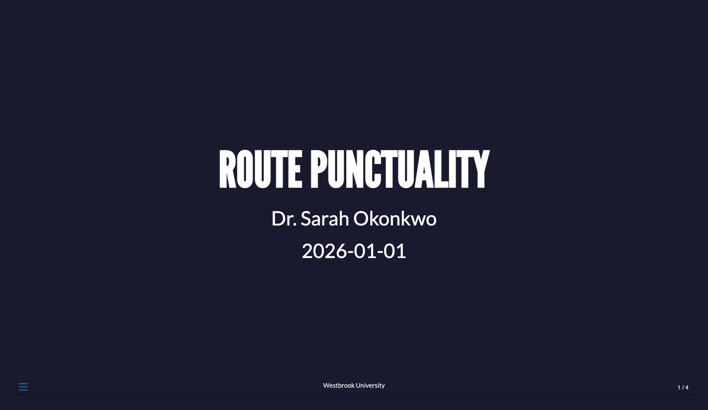
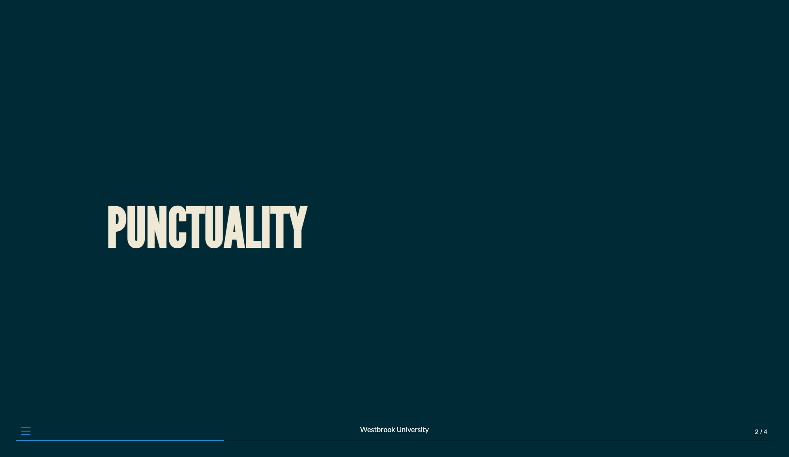
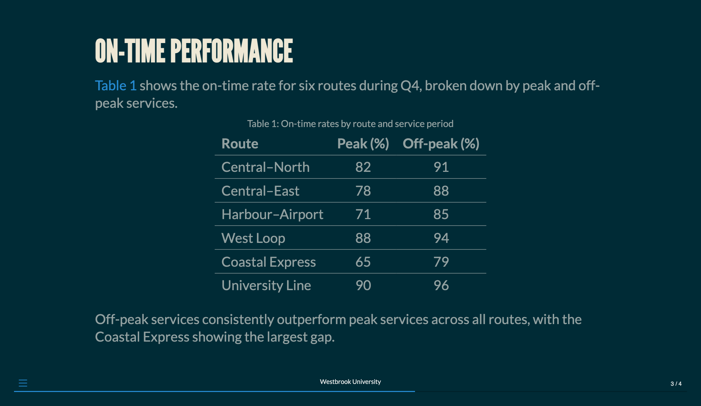
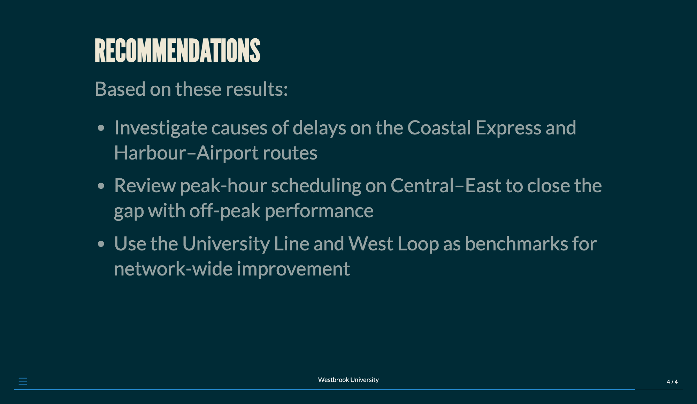

11 Presentations
In addition to long-form documents, you can also use Quarto to create presentations.
Quarto supports three main presentation formats. Table 11.1 summarizes these formats and their use cases.
| Format | Output | Use Case |
|---|---|---|
revealjs |
HTML | Most capable, recommended default |
pptx |
PowerPoint | Office environments |
beamer |
LaTeX workflows |
Regardless of format type, you can use the same markdown syntax to create your presentation content. The most flexible and feature-rich of these formats is revealjs, which supports a wide range of features and customizations. HTML slides created with revealjs can also be printed to PDF for easier distribution, though if you have interactive features in your presentation, they will be lost in the PDF version.
This chapter focuses on the revealjs format, though the basic syntax we describe applies to all formats. We will close the chapter with a complete example of a revealjs presentation and some tips for sharing your presentation with others as well as callouts for commonly used format-specific features in pptx and beamer.
11.1 Your first presentation
The best way to learn Quarto presentations is to start with a working example. The following presentation demonstrates many of the features you’ll use most often: a custom theme, incremental bullet points, code with side-by-side output, and speaker notes. You can copy this into a new .qmd file and render it to see the result immediately, then modify it to explore how each option works.
punctuality.qmd
---
title: Route Punctuality
author: Dr. Sarah Okonkwo
affiliation: Westbrook University
date: 2026-01-01
format:
revealjs:
theme: moon
footer: Westbrook University
code-block-height: 500px
slide-number: c/t
preview-links: auto
title-slide-attributes:
data-background-color: "#1a1a2e"
---
# Punctuality
## On-time performance {.smaller}
@tbl-punctuality shows the on-time rate for six routes during Q4, broken down by peak and off-peak services.
| Route | Peak (%) | Off-peak (%) |
|:------------------|:--------:|:------------:|
| Central–North | 82 | 91 |
| Central–East | 78 | 88 |
| Harbour–Airport | 71 | 85 |
| West Loop | 88 | 94 |
| Coastal Express | 65 | 79 |
| University Line | 90 | 96 |
: On-time rates by route and service period {#tbl-punctuality}
Off-peak services consistently outperform peak services across all routes, with the Coastal Express showing the largest gap.
## Recommendations
Based on these results:
- Investigate causes of delays on the Coastal Express and Harbour–Airport routes
- Review peak-hour scheduling on Central–East to close the gap with off-peak performance
- Use the University Line and West Loop as benchmarks for network-wide improvement
::: {.notes}
Remember to explain how each recommendation relates to the table in the previous slide.
:::




punctuality.qmd
Throughout this chapter, we use level 1 headings for section breaks and level 2 headings for slide breaks. See the Pandoc documentation on structuring the slide show for additional details on how headings map to slides.
11.3 Code
In presentation formats (revealjs, beamer, pptx), Quarto defaults to echo: false, so code cells produce output without showing their source. To display the code, set echo: true globally in YAML or per cell with #| echo: true.
11.3.1 Code blocks
11.3.1.1 Code highlighting
You can highlight specific lines in code blocks:
````{python}
#| code-line-numbers="2,4"
def example():
highlighted = True # Line 2
not_highlighted = False
also_highlighted = True # Line 4
```For progressive highlighting through slide steps, use the pipe separator:
````{python}
#| code-line-numbers="|1|2|3"
first_step = 1
second_step = 2
third_step = 3
```11.3.1.2 Height
Set a maximum height for code blocks (content beyond this height will scroll):
presentation.qmd
---
format:
revealjs:
code-block-height: 650px
---11.3.2 Code annotation
Quarto’s code annotation feature helps you explain code step-by-step. Add numbered markers in code comments, then provide explanations in a list below:
```{.python code-line-numbers="true"}
import pandas as pd # <1>
df = pd.read_csv("data.csv") # <2>
df = df.dropna() # <3>
```
1. Import the pandas library
2. Load data from a CSV file
3. Remove rows with missing valuesBy default, annotations appear as numbered markers that reveal explanations on hover or click. Use code-annotations to change this behavior:
presentation.qmd
---
format:
revealjs:
code-annotations: below # hover | select | below
---| Value | Behavior |
|---|---|
hover |
Show annotation on hover (default) |
select |
Show annotation on click |
below |
Display all annotations below the code block |
For executable code cells, place annotations in the source code rather than using cell options:
```{python}
import pandas as pd # <1>
df = pd.read_csv("data.csv") # <2>
```
1. Import pandas
2. Load the data11.3.3 Controlling output
11.3.3.1 Image size
As described in Image sizing, Quarto’s auto-stretch feature expands a single top-level figure to fill the remaining vertical space on a slide. This applies to computational output as well. Disable it globally with auto-stretch: false in YAML, or per-slide by adding .nostretch to the slide heading.
For explicit control, use fig-width and fig-height (in inches) to set the physical dimensions of generated figures. At the document level, these apply to both engines:
presentation.qmd
---
format:
revealjs:
fig-width: 8
fig-height: 5
---With the knitr engine, you can also override these per cell:
```{r}
#| fig-width: 6
#| fig-height: 4
plot(cars)
```The fig-asp option (knitr only) sets the height-to-width aspect ratio and overrides fig-height when both are specified:
```{r}
#| fig-width: 6
#| fig-asp: 0.618
plot(cars)
```With the jupyter engine, fig-width and fig-height have no effect at the cell level — they must be set at the document or project level. For cell-level control with Matplotlib, set the figure size directly in Python:
```{python}
import matplotlib.pyplot as plt
fig, ax = plt.subplots(figsize=(6, 4))
ax.plot([1, 2, 3])
```To control the displayed size of the output image independently of its generated dimensions, use out-width and out-height, which accept CSS values and work at the cell level with both engines:
```{r}
#| out-width: "70%"
plot(cars)
```For sharper figures on high-density (retina) displays, increase fig-dpi:
presentation.qmd
---
format:
revealjs:
fig-dpi: 192
---Alternatively, set fig-format: retina to render at 2x resolution without choosing a specific DPI value.
Like fig-width and fig-height, both fig-dpi and fig-format have no effect at the cell level with the Jupyter engine and must be set at the document or project level. For knitr, they can be set per cell, e.g., #| fig-dpi: 192 or #| fig-format: retina.
11.3.3.2 Output location
You can control where code output appears using output-location:
| Value | Behavior |
|---|---|
fragment |
Output appears incrementally |
slide |
Output on next slide |
column |
Output in adjacent column |
column-fragment |
Adjacent column, incremental |
Example:
````{python}
#| output-location: column
import matplotlib.pyplot as plt
plt.plot([1, 2, 3])
plt.show()
````11.3.4 Interactive documents
Presentations can incorporate interactive content using Observable JS or Shiny. This allows you to embed reactive inputs and outputs directly in slides, turning a presentation into a live application. See the Observable and Shiny documentation for details.
An alternative approach is to add an interactive document hosted on Posit Connect or another platform as an iframe.
11.4 Animation
11.4.1 Slide transitions
Reveal can animate the change between slides. Set a global transition style in YAML:
presentation.qmd
---
format:
revealjs:
transition: slide
transition-speed: fast
---The available transition types are:
| Type | Effect |
|---|---|
none |
Switch instantly |
fade |
Cross fade |
slide |
Slide horizontally |
convex |
Slide at a convex angle |
concave |
Slide at a concave angle |
zoom |
Scale in from the center of the screen |
Override the transition on individual slides using heading attributes:
## Slide title {transition="fade" transition-speed="slow"}You can also specify separate in and out transitions:
## Slide title {transition="fade-in slide-out"}Use background-transition to control the transition for slide backgrounds independently of content.
11.4.2 Pauses
You can use three dots to create pauses within slides:
## Slide title
Content before pause.
. . .
Content after pause.These pauses work with all content types, including text, images, and code blocks. They can also be used to break up revealing bullet points, though we recommend using incremental lists for that purpose instead.
11.4.3 Incremental lists
By default, list items appear all at once. Enable incremental display globally:
presentation.qmd
---
title: My Presentation
format:
revealjs:
incremental: true
---For per-list control, use div classes:
::: {.incremental}
- First item appears
- Second item appears
- Third item appears
:::Or disable incremental for specific lists when globally enabled:
::: {.nonincremental}
- All items
- Appear at once
:::11.4.4 Fragments
Fragments provide more granular control over incremental animation than pauses or incremental lists. Any element with the class fragment will be stepped through before moving on to the next slide, and you can apply a variety of animation effects:
::: {.fragment .fade-in}
Fade in
:::
::: {.fragment .fade-up}
Slide up while fading in
:::
::: {.fragment .fade-left}
Slide left while fading in
:::
::: {.fragment .fade-in-then-semi-out}
Fade in then semi out
:::Other available fragment classes include .fade-out, .fade-right, .fade-down, .highlight-red, .highlight-blue, .strike, and .grow.
11.4.5 Auto-animate
Quarto can automatically animate elements across adjacent slides. Add the auto-animate attribute to two consecutive slides, and Reveal will animate all matching elements between them:
## Slide 1 {auto-animate=true}
- Item one
- Item two
## Slide 2 {auto-animate=true}
- Item one
- Item two
- Item threeYou can fine-tune animation behavior globally or per-slide:
presentation.qmd
---
format:
revealjs:
auto-animate-easing: ease-in-out
auto-animate-unmatched: false
auto-animate-duration: 0.8
---11.5 Customizing appearance
11.5.1 Presentation size
Reveal slides default to 1050 × 700 pixels, an aspect ratio close to most laptop screens. Reveal scales content automatically to fit the viewer’s display without changing the layout, but you can adjust the base dimensions, the margin around content, and the scaling limits:
presentation.qmd
---
format:
revealjs:
width: 1050
height: 700
margin: 0.1
min-scale: 0.2
max-scale: 2.0
---Changing width and height affects the coordinate space for all absolute positioning and layout calculations, so pick values early and design your slides around them.
11.5.2 Slide numbers
Enable slide numbers with slide-number. Rather than just true, you can also specify a format string:
| Value | Display |
|---|---|
true |
Slide number only |
c/t |
Current slide / total slides |
c |
Current slide only |
h/v |
Horizontal / vertical slide number |
h.v |
Horizontal . vertical slide number |
You can control when slide numbers are visible using show-slide-number:
presentation.qmd
---
format:
revealjs:
slide-number: c/t
show-slide-number: speaker # all | print | speaker
---11.5.3 Themes
Reveal includes eleven built-in themes: default, beige, blood, dark, dracula, league, moon, night, serif, simple, sky, and solarized.
Set a theme in YAML:
presentation.qmd
---
format:
revealjs:
theme: dark
---Beyond the built-in themes, you can customize any theme using SCSS variables or create entirely new themes. See the Reveal Themes documentation for details.
11.5.4 Brand
If you want custom colors and fonts for your presentation, the easiest approach is through brand.yml. Add a _brand.yml file alongside your presentation .qmd file, and Quarto will automatically apply it.
The most noticeable effect of color settings in a presentation is on the slide background and text. primary is used for links and the presentation’s navigation controls:
_brand.yml
color:
foreground: "#E0EFDE"
background: "#162627"
primary: "#8A7090"brand.yml is also a convenient way to set fonts for your presentation using Google Fonts. You can set the main font (base), the font used for headings (headings), and the font used for code (monospace):
_brand.yml
color:
foreground: "#E0EFDE"
background: "#162627"
primary: "#8A7090"
typography:
fonts:
- family: Chango
source: google
- family: Abel
source: google
- family: JetBrains Mono
base: Abel
headings: Chango
monospace: JetBrains MonoSwap source: google for source: bunny if you’d prefer Bunny Fonts—a GDPR compliant alternative to Google Fonts.
If you are using brand.yml across your organization’s projects (e.g. for both a website and presentations), you can place _brand.yml in a parent directory and it will be found automatically. You can read about all the options available in the Quarto documentation Guide to using brand.yml.
11.5.5 Custom CSS
Beyond brand.yml and built-in themes, you can add custom styles using CSS or SCSS files.
11.5.5.1 Adding a stylesheet
Reference a CSS file in YAML:
presentation.qmd
---
format:
revealjs:
theme: [default, custom.css]
---The theme option accepts a list, applying styles in order. Place your custom file after the base theme to override its defaults.
11.5.5.2 SCSS variables
RevealJS themes use SCSS variables for key design tokens. Create a .scss file to override them:
custom.scss
/*-- scss:defaults --*/
$presentation-heading-color: #2a9d8f;
$body-bg: #264653;
$body-color: #e9c46a;
$link-color: #e76f51;
$code-block-bg: #1a1a2e;
/*-- scss:rules --*/
.reveal .slide-number {
font-size: 0.6em;
}The scss:defaults section sets variables before the theme compiles; scss:rules adds custom CSS rules after.
Reference it in your YAML:
presentation.qmd
---
format:
revealjs:
theme: [default, custom.scss]
---Common SCSS variables include:
| Variable | Purpose |
|---|---|
$body-bg |
Slide background color |
$body-color |
Default text color |
$link-color |
Hyperlink color |
$presentation-heading-color |
Heading color |
$presentation-heading-font |
Heading font family |
$code-block-bg |
Code block background |
$code-color |
Inline code color |
See the Reveal Themes documentation for the full list of available variables.
11.6 Presenting
11.6.1 Speaker notes
Add presenter notes visible only in speaker view:
## Slide title
Slide content visible to audience.
::: {.notes}
Speaker notes only visible to presenter.
Press 'S' to open speaker view.
:::Speaker view displays:
- Current slide
- Upcoming slide
- Elapsed time
- Speaker notes
11.6.3 Preview links
The preview-links option opens hyperlinks in an iframe overlaid on the current slide, so you can navigate to a website without leaving the presentation:
presentation.qmd
---
format:
revealjs:
preview-links: auto
---11.6.4 Chalkboard
The built-in Chalkboard plugin lets you draw on slides during a presentation. Enable it in YAML:
presentation.qmd
---
format:
revealjs:
chalkboard: true
---You can customize its appearance and behavior:
presentation.qmd
---
format:
revealjs:
chalkboard:
theme: whiteboard
boardmarker-width: 5
buttons: false
---The Chalkboard plugin is not compatible with embed-resources: true. Using both will result in an error.
11.6.5 Other presenting features
Slide tone plays a subtle sound when you change slides—a helpful auditory cue, particularly for presenters who are blind or low-vision. Enable it with
slide-tone: true.Auto-slide advances slides on a timer without any user input. Set
auto-slideto a value in milliseconds (e.g.auto-slide: 5000for 5 seconds). Addloop: trueto repeat the presentation continuously. A play/pause control appears automatically; pressAto toggle it.Slide zoom lets you zoom into any element on a slide by holding
Alt(orCtrl) and clicking on it. Click again to zoom back out.The Multiplex plugin allows your audience to follow along on their own devices as you advance through slides. See the Presenting Slides documentation for setup instructions.
11.8 Accessibility
Accessible presentations ensure all audience members can engage with your content, regardless of how they consume it.
11.8.1 Structure and semantics
Consider using heading levels consistently throughout your presentation, as they define the slide structure for screen readers and other assistive technologies. Keeping slide content concise helps everyone follow along—not just those using assistive technology. You can also improve accessibility by placing content in the order it should be read, ensuring a logical reading order for those who navigate sequentially.
11.8.2 Images and media
You should provide alt text for all images that convey information:
For decorative images that don’t convey information, you can use empty alt text to indicate they should be skipped:
{fig-alt=""}If your presentation includes video or audio content, consider adding captions or transcripts so that all audience members can access the information.
11.8.3 Color and contrast
You should maintain sufficient contrast between text and background—WCAG recommends a minimum ratio of 4.5:1 for normal text. Rather than relying on color alone to convey meaning, you can pair color with text labels, patterns, or icons so that color-blind users can distinguish elements. Testing your theme with a contrast checker before presenting helps catch issues early.
11.8.5 Slide tone
Presenters who are blind or low-vision may find it helpful to enable auditory feedback when slides change:
presentation.qmd
---
format:
revealjs:
slide-tone: true
---11.8.6 Testing
Before presenting, consider navigating your presentation using only the keyboard (arrow keys, Tab, Enter) to verify that all content is reachable. If possible, you can use a screen reader to confirm that slide content is announced correctly and in a logical order. You’ll also want to check that all interactive elements—links, tabs, and buttons—are focusable and have appropriate labels.